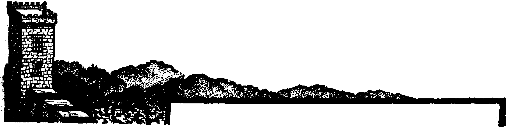
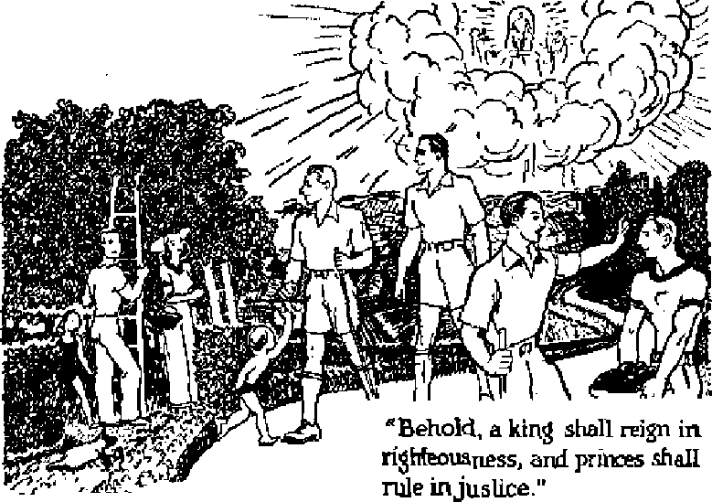

Will their continued use defeat the aims of labor?
Waiting for God’s kingdom rouses her jealous wrath
Atrocious shoe styles of past centuries, and of the present
Not by the candles once used by pagans, but by enlightening truth on resurrection
MARGH 22, 1947 semimonthly
THE MISSION OF THIS JOURNAL
News sources that are able to keep you awake to the vital issues of our times must be unfettered by censorship and selfish interests. “Awake!” has no fetters. It recognizes facts, faces facts, is free to publish facts. It is not bound by political ambitions or obligations; it is unhampered by advertisers whose toes must not be trodden on; it is unprejudiced by traditional creeds. This journal keeps itself free that it may speak freely to you. But it does not abuse its freedom. It maintains integrity to truth.
“Awake I” uses the regular news channels, but is not dependent on them. Its own correspondents are on all continents, in scores of nations. From the four corners of the earth their uncensored, on-the-scenes reports come to you through these columns. This journal’s viewpoint is not narrow, but is international. It is read in many nations, in many languages, by persons of all ages. T hrough its pages many fields of knowledge pass in review—government, commerce, religion, history, geography, science, social conditions, natural wonders—why, its cover* age is as broad as the earth and as high as the heavens.
“Awake 1” pledges itself to righteous principles, to exposing hidden foes and subtle dangers, to championing freedom for all, to comforting mourners and strengthening those disheartened by the failures of a delinquent world, reflecting sure hope for the establishment of a righteous New World.
Get acquainted with “Awake!” Keep awake by reading “Awake!”
Published Semimonthly By WATCHTOWER BIBLE AND TRACT SOCIETY, INC.
117 Adams Street Brooklyn 1, N. Y., U. S, A.
K H. Knorr, President Grant Suiter, Secretary
Five cents a copy One dollar a year
Remittances should be sent to office in your country in compliance with regulations to Guarantee d.xfe delivery of me Tier Remittances are accepted st Brooklyn from countries where no frffice fc located, by Intonational money order only. Subscription rates in different countries are here stated in local currency.
Mot Ice of expiration (with renewal blank) Lt sent at least two issues before subscription empires.
Change trf address when sent to our office may be expected effective within one month. Send your old as well as new address.
Offices Yearly Subscription Rate
America, U,S-. 117 Adams SU Brooklyn lt N.Y. $1 Austral la, 7 Beresford Rd., Strathfield. N.S.W. 6s Canada., 40 Irwin Ave., Toronto 5, Ontario $1 Enjland* 34 Craven Terrace* London, W* 2 5s South Africa, 623 Boston House, Cape Town 5s
Entered as seeond-dass matter at Brooklyn, N* Y, Act of March 3, 1379. Printed in R S. A.
CONTENTS
Can Labor Profit by Continued Strikes? 3
Atrocious Styles of Medieval Times
Whitewashing Mary Surratt
Perjury of Mrs. Surratt
The Priests Escape
Mammals Rare and Strange
Giant Panda and Paradoxical Platypus Nazis Gone, but Tactics Linger On The “Black Christ” of Portobclo American Fascists Get Prison Terms “Thy Word Is Truth”
Brightening Up Funerals
April 1, All Fools’ Day Watching the World
17 IS
19
20
22
23
24
25
27
29
&“Now it is high time to awake.— Romans 13:!! 9/
Volume XXVIII
.J -■■ ' -— ---
Brooklyn, N.Y., March 22, 1947
Number 6
Can Labor Profit by Continued Strikes?
IN THESE days, when oppression, starvation and misery stalk the earth, it would be a hard man indeed who condemned any effort to bring betterment to the people in whole or in part. Nor can any'doubt exist that “the strike is a weapon through which labor has won a decent respect for its rights”. But Americans are staring at a question that assumes the form of a gun barrel; Is the betterment of one group of Americans to be purchased at the expense of suffering or death to all the rest! If labor unions could enforce such harsh terms, would the result achieved bring them permanent profit and security!
The recent coal strike, and the power strike in Pittsburgh, and the general strike in Oakland, have caused many to ponder the future course of strikes. Is it possible for labor to be deprived of this effective weapon and yet be protected in her essential rights! If security is the goal, and most authorities agree that this is the chief objective, is there no other way than by public detriment and loss! Besides the danger to health and life involved in the strike, also of concern to the general public is relation between wages and cost of living. Hovering close by is
inflation, greedily anxious to gobble up the whole economic system. Furthermore, in the heat of industrial conflict, where excesses, as will be seen, leap all bounds, neither capital nor labor seems to realize that they are raining body blows on the economic structure that supports them both.
One of the circumstances revealing this suicidal strife is the fact that the general public, which in large percentage sympathized with the unions, has been treated with such contemptuous disregard. A writer for labor denies that this is the unions’ fault: “It is the practices of Big Business, not labor’s desires, that damage the public welfare. Union demands will lead to prosperity for all groups.” The writer adds: “As long as prices are soaring, labor must seek offsetting wage increases.” On the other hand, many authorities, with plenty of figures to support their claim, prophesy that strikes for higher wages could well presage another inflation, with its inevitable depression.
Thus the industrial controversy has bred two economic schools whose relative positions are as far apart as the poles, The analysis of their findings, which
follows, does not support either capital or labor. If it is slanted in any direction, it is in that of the suffering party of the third part, the public.
Legislative Victories for Labor
The rise of dominant labor ha^ occurred during the past fifteen years only, and this rise has been paced by liberal labor legislation and favorable interpretation by the courts. The first ofThis was the Anti-Injunction or Norris-LaGuardia Act, made a law in March 23, 1932, The next important legislation, the much discussed and decried Wagner Act, the bnagna carta’ of the unions, and “the cornerstone of government labor policy”, was passed in the same year that saw the birth of Congress of Industrial Organization, 1935. Since this Act is now the focal point of attack by many congressional leaders and others who oppose the closed shop, its provisions are worth considering. Officially known as The Wagner-Connery National Labor Relations Act, it legalized collective bargaining, outlawed company-dominated unions, and established the National Labor Relations Board with offices nationwide, to hear labor grievances. Through this sweeping legislative victory, new power flowed into the ranks of labor. Its effect was to legalize the closed shop, to give it a permanent place in American institutions. A new era with pleasant vistas opened up for labor unions. Why not? Professional strikebreakers, once employed by corporations who furnished an arsenal to implement their traveling raids, were a thing of the past. So were management tricks to break up union entity by firing key leaders (the seniority rule in contracts forbids thi^), and new agreements enforced the now famous checkoff, whereby management was compelled to withhold dues from each employees’ cheek and turn it over to < the union.
A golden jubilee of increased union membership naturally ensned. Of further assistance was the passage by the next Congress (75th) of the Wages and Hour Bill, or Fair Labor Standards Act, which is now the basis for the six-biJlion-dollar portal-to-portal suits.
Labor's Court Victories
. The Mount Clemens Pottery case decision handed down by the TJ. S. Supreme Court, in its fall term, sustained employees of the Pottery Company in their contention that according to Fair Labor Standards Act they were entitled to payment from the time they entered the gates and punched the clock. (However, labor received a setback on the portal-to-portal pay issue when Federal Judge Picard, on February 8, dismissed the claims of the pottery employees for walking time and getting-ready-for-work pay.)
Also emphasizing the judicial favor to labor was the decision in December handed down by the Chicago federal court voiding the Lea Act. Known also as the “Anti-Petrillo Act”, this Act was designed to curb Petrillo’s Musicians union in their dictatorial demands upon radio stations’ employment. In rejecting this Act as “class legislation”, the judge declared it contravened the Thirteenth Amendment, which forbids coercion to “involuntary servitude”; which, in passing, is noteworthy as the keynote defense fbr Lewis and the United Mine Workers, ill the $3,510,000 contempt conviction appealed to the Supreme Court
In the legislative and court arena it is true that up to 1947 lahor has won practically every round. In 1940 the Smith Anti-Strike Bill was killed, and also Wagner Act amendments proposed the same year. Last May the president vetoed the Case bill, but new efforts are before Congress to “end the closed shop”,, or compel arbitration.
The single exception to this dominant advance of labor was the War Labor Disputes Act (Smith-Connally Act, 1943), forbidding strikes during hostil-
ities, but this was merely an emergency measure to become ineffective six months after war ended. (Apparently Lewis was not charged with violation of this Act, but with contempt of an injunction order. However, it has been declared that he violated it; on the other hand, Lewis’ lawyers claim that the fine for contempt ($3,510,000) was “700 times the penalty fixed by Congress for violation of the Smith-Connally war labor disputes Act’’.) (Year Book of American Labor, p. 70, Vol. 1) This in brief recounts labor’s legislative and court victories which have been reflected in union membership increase from 3,000,000 in 1932 to 15,000,000 in 1946!
Aims of Labor
‘ What are the ultimate aims of labor! Asked in some quarters, this question would get such answers as “to destroy the country”, “to create a wage-price spiral to inflation and ruin,” “to set up a labor dictatorship.” One sober commentator queries: “Does the right to strike include the right to kill I” The New York trucking strike, which tied up food supplies and withheld vital oxygen to hospitals; the Pittsburgh power strike, which paralyzed the city; the Oakland general strike, in which 142 unions took part simply because a police car was used to escort non-union cars through a picket line; the coal strike, which was characterized by Judge Goldsborough as an “evil, monstrous thing” meaning “hunger and cold and destitution” for the American people; and the recent London trucking strike, which would have brought starvation to thousands had not the Labor government sent in troops to bring food, have ushered in union-caused hardships and admittedly have somewhat estranged public sympathy.
On the other hand, the CIO, flanked by a report of economist Robert Nathan, claims that corporate net earnings for 1947 will, before taxes, be fifteen and a half billion dollars, which, declares President Philip Murray, warrant “substantial” wage increases, at least 25 percent more. They further aver that a low break-even point (percentage of capacity operation at which the plant neither loses nor makes a profit) on most corporations make increased employment and higher wages both desirable and practicable. Nathan even insists that higher wages, without an increase in prices, will avert depression by giving the worker more purchasing power. This then is the burden of labor’s demand: “Wage increase without price increase.” On this point CIO and AFL will agree. More extreme yet are the declarations of the Socialist Labor party: “Labor, and labor alone, produces all social values [and] wages are that part of labor’s own produce that he is allowed to keep, and that profits are nothing more nor less than the present and running stealings perpetrated by the capitalist on the working classes.”
In this class conflict also undoubtedly the shadow of the past forms a dim yet moving background: the unforgettable picture of impoverished miners forever in debt to the company-owned store; the Southern mill worker, whose children were forced to labor in the lint-filled atmosphere from dawn to dark; the stretchouts, which compelled one man to operate more and more machines until nerve and body collapsed; and farther back, the sweatshops, in which men’s wages were never enough to relieve the gnaw of hunger, the bite of cold. Never forget, not a few in this generation have seen these things and are inclined to regard it just retribution when the unions have their day.
Unfortunately the rise of labor’s pendulum does not carry all the oppressed, nor can it disassociate its own prosperity from the country’s prosperity. Says H. W. Steinkraus even more specifically: “Whether we like it or not the good fortunes of both labor and management are
closely woven together.” Authorities also agree that there are no winners in a long strike. Another contends that profits, prices and wages all depend on productivity; and in this regard there is no substitute for comnetence, fairness and honesty.
The Structure of Unions
Before considering the possible overall consequences of striking it seems of interest to consider the structure and government of the union. The two large divisions in the United States are the American Federation of Labor (AFL) and the Congress of Industrial Organization (CIO). The CIO was organized by eight presidents of internationals (such as the United Mine Workers), the leader of which movement was John L. Lewis. Later Lewis fell out with Murray and Hillman and returned the United Mine Workers to the AFL. He publicly declared at his recent trial that he spoke for 600,000 miners as their president and for 8,000,000 members of the AFL as vice-president In the AFL, besides the national president, there is a second executive division called the council (for example, the council for the Teamsters’ Union has jurisdiction for all local teamsters in southern California), and the next division is the “local”. Many of the unions of the AFL pay their presidents in excess of $10,000 per annum, while presidents of the Longshoremen, United Mine Workers, American Federation of Musicians and the Teamsters’ Union receive $25,000 “plus extremely generous expense accounts”. Each union in turn pays to headquarters of AFL for Washington representation. Its president for many years has been William Green.
The CIO is also composed of constituent unions, but the CIO is different not only in its aims for a 25-percent wage increase, but also in that it is organized vertically, that is, in industries nationwide, such as the Automotive Workers. Further, member unions of the CIO adhere more or less strictly to policies of the executive headquarters. CIO has had many dealings direct with the government and freely employs intelligent propaganda to influence the government and public as well. On the other hand, AFL wants no government interference. Two-thirds of all CIO unions pay top price of $6,000 per year to their heads; presidents of United Automotive Workers, Amalgamated Clothing Workers and United Steel Workers receive $9,000, $15,000 and $20,000 respectively. The president of CIO is Philip Murray.
When there is a conflict in a plant caused by dispute between CIO and AFL as to which shall have right to organize, this is usually called an organizational strike. On the other hand, jurisdictional strikes may be caused by conflicts between two different AFL or CIO unions, each claiming certain individuals or groups. (The seven-month Hollywood movie studio strike was jurisdictional) Unions are sometimes organized according to territory, but more often According to trade internationally for the United States and Canada. Thus membership is based on those in a specified occupation, most common of which is the building trade.
There is no lack of democratic structure in the government of the nnion. Officers ’are elected, and in the CIO no member may be dismissed without a hearing. However, the president of a union is very strong and he can appoint confidential committees and expel anyone who does not properly support the strike. There is some evidence also that union leaders are given almost unquestioning support, and elections are frequently uncontested. It 'should also be remarked that between the AFL and the CIO there is a bitter conflict for powefr, and in general the AFL will not recognize a CIO picket line. Recently there has been talk of a merger of AFL and CIO.
In this consideration of the cost and operation ofdabor unions it should not
be lost sight of that even the high salaries to union presidents are not comparable to the salaries and compensation to the presidents, say, of United States Steel, General Motors, the moving picture industry, and many otters. Government figures show that the top income in the country was, after all deductions, more than a million dollars. Many of these, after all taxes are paid, have several hundred thousand dollars' income. But to increase the size of Big Labor to meet the size of Bigger Capital does not necessarily help the plight of the people.
Labor Cf^ts and Profits -
This brings up the fact that there are certain aspects of the situation, especially thje damages and dangers of continued demands enforced by strikes, to which the unions appear blind. First is the intensely controversial issue as to whether increased wages necessarily bring higher prices. Here we enter a field of highly conflicting claims. Even on the related issue of what percentage the cost of labor represents in the cost of the finished product, one labor authority claims this is often as low as 8 percent and generally not over 25 percent; while business authorities place the average at 33 percent and note that in Buch industries as furniture manufacturing, diamond cutting, watches and jewelry manufacturing, this reaches over 80 percent. In 1946 the estimated percentage of wages and salaries of the gross income of all corporations was 40 percent.
Further commenting upon the CIO estimates of $13,500,000,000 total profit before taxes on all corporations for 1947, the bank report reveals that of the na tional business organization composed of 420,000 corporations of all sizes and 2,500,000 partnerships, individual proprietorships, etc., only half showed any profit for the tabulated years 1916-1943. Another writer shows that the average profit for all businesses was 3 percent. If labor cost is increased 25 percent
MARCH m?
when it is already costing at least 30 percent, to give the least figure possible from the above, the result is 7.5 percent increase for total cost of unit. What then happens to the average business, which makes only 3 percent profit? Either they raise the cost of the commodity or they eventually go out of business. The marginal and businesses already showing a deficit are simply snowed under.
Summing up the interest that business has in wage increases, and pointing out that the public also has a stake in corporate success to the tune of 20,000,000 Stockholders in American industry, a manufacturer emphasizes: uIt is simply unsound economics to think that we can grant large wage increases and at the same time keep prices also from rising?* Labor must likewise admit an interest in staving off bankruptcy in general, as failure inevitably brings unemployment with all the vicious accompaniments.
Things Labor Must Consider
Wage increases that have a tendency to price a commodity off the market are well illustrated by the soft coal industry itself. In 1920 the price of bituminous was slightly over $1.00 per ton at the mines. The price today, after repeated wage increases (for a 54-hour week the miner now makes $75.25; $1.18 per hour plus overtime), is $3.25 at the mines. Reflecting public trend away from coal during* that period, the 1920 percentage use of coal for heat and power of 78 percent had fallen to 51.3 percent in 1946. With further wage demands by Lewis of 32c an hour, and further strike interruption of coal supply a definite probability, what is the home builder likely to do when the choice lies between installing a coal furnace, or gas, or oil? Thus the coal strikers appear to be fighting not only management but also inexorable rules of supply and demand.
Also to be considered are the present losses to labor. Recent reports from the five leading automobile companies show
7
that they took a net loss in 1946 in excess of $5,500,000, Department of labor figures show the loss of 107,450,000 mandays due to strikes for the year 1946. Another writer estimated the man-days lost up to May 1946 for postwar strikes had been 110 million, and that this represented a loss of $5,500,000,000 in output. In these figures lies u greatly overlooked fact: the workingman's condition will be improved by lower prices, as well as increased wages, and “large production means lower cost". Statistics that do not necessarily rule out strikes but that do merit consideration are that strikes often were not justified by wage increases won. For instance, “not until 1948 will the workers in General Motors be as well off as they would have been had they not struck and had worked steadily without any wage increase whatsoever. Not until 1953 will they be as well off as they would have been had they accepted the company's offer of 13| cents."
History is a teacher. The result of the price-wage spiral in Italy, France and Germany was the socialization of labor, that is, they came under strict government control. Maybe it cannot happen here, but the similar symptoms often foretell the similar disease.
Curbs on Labor
Labor, as a result of its unrestrained drive for power, seems to have overtaxed public sympathy. There is a rather general demand for legislation to curb labor, A recent Gallop Poll shows eight percent of the public favor the closed sKop, whereas sixty-six percent are for the open shop. Current legislation in the making before Congress contemplates bans on such practices and policies as closed shop, mass picketing, portal-to-portal pay, secondary boycotts, sympathy strikes, outlaw strikes violating contracts, jurisdictional strikes, checkoff and industry-wide bargaining. The legislators are also considering moves requiring secret ballots electing union leader^ at regular intervals, a majority vote of all workers involved before calling a strike, and free speech for the employer to the union rank and file. They consider that union leaders have too much power over the workingman. Some working for labor curbs claim amendment of the Wagner Act is necessary to avert abuses and socialistic dictatorship.
Labor leaders before Congress committees considering labor legislation flatly reject any curbs on labor, refusing to discuss constructively the problems involving pnblic welfare. Both Philip Murray, president of the CIO, and William Green, president of the AFL, opposed ail bills being considered, and neither offered any alternate remedies to halt strikes opposed to the public ^welfare. But the legislation ml? come, it seems. Already Tennessee, Florida, Arkansas, Arizona and Virginia have banned the closed shop, and similar legislation impends in New York, North Carolina and Georgia. Closed shops have been termed monopolies under the domination of radical and irresponsible labor leaders, and some have called the anti-closed shop or the open shop measures as “freedom to work" legislation. Certainly the closed shop deprives a person of individual rights. Labor’s position has always been that there must be higher wages to counteract higher prices, but before the congressional committees some witnesses have wisely observed that the remedy is not increased wages for workers in certain industries, but lower prices that will benefit the public generally.
When will distraught humanity learn that they and their leaders, regardless of the policies of those in power, cannot bring equality and peace to the world? They have dictatorships, Communism, democracies, People's governments, Labor governments; and with them all they have still endless woe. Will they learn before it is too late that only under God’s kingdom can they attain equality and justice and lasting peace?
Murdering half a million Yugoslavs deemed less criminal than having faith In Jehovah's kingdom
IN September of last year Archbishop Step-inac was arrested in Yugoslavia, charged with “crimes against the people”. Evidence at the trial proved that when Hitler took over the country in April of 1941 and set up the puppet regime of Pavelitch, Stepinac became a member of Pavelitch’s parliament, became apostolic vicar to Pavelitch’s army, and became a , member of the committee to convert Serbs to Roman Catholicism. Hierarchy and terrorists, known as “Ustashi” and “Crusaders”, were responsible for forced conversions to Roman Catholicism and for the massacres of thousands of Orthodox Serbs. Stepinac attended Ustashi banquets and blessed the terrorists. Hitler’s puppet regime drenched itself in the blood of 50,000 Jews and 500,000 Serbs, which means much of the blood stained the black skirts of collaborating Stepinac. For his share in murder he was sentenced to sixteen years of hard labor.
Also during September of 1940 a group of Jehovah’s witnesses were arrested in Yugoslavia. The case went,to trial February 3, 1947. They were charged with sending false reports out of the country, with working against the interests of the state, and with waiting for the coming of the “kingdom of Jehovah”. The trial was hustled through, and on February 6 it was announced that three of the witnesses were acquitted, eleven were given sentences ranging from five to fifteen years’ imprisonment, and three were condemned to die. Can
in the field of kingdom.
you fathom the standard of values by which Yugoslavian courts operate! One man works with the Nazi invaders and assists in murdering half a million Yugoslavs. He draws sixteen years of hard labor. Others wait for the kingdom of Jehovah God. For this they receive death sentences. Either Yugoslavia places a very low value on the lives of its people or it puts a fantastically high value and sacredness on its national state, even jealously resenting competition government from God’s . On February 22 the following dispatch appeared in the New York Times:
The Supreme Court of Croatia has recently commuted the death sentences of three of Jehovah’s witnesses. As the result of an appeal, the three received sentences of twenty years’ imprisonment at hard labor. Some others who were tried with them also had their prison terms reduced. Meanwhile, five former Yugoslav officials of the Shell Oil Company in Zagreb were sentenced to terms ranging from one to nine years on charges of collaboration with the Germans and the Ustashi. This is good news, but it still shows that Yugoslavia believes in lighter "sentences for those who collaborated with Hitler than for those who wait for the kingdom of Jehovah God.
Russian influence in Yugoslavia is well known. Yugoslavs dislike even the use of the word “God”. Godlessness becomes a mania with them. But since man was created with the inherent desire to worship something, Yugoslavia fills this
desire with the state, making it their god, their object of worship, their religion. And their state-religion susceptibilities are as sensitive and as easily shocked as any religionist’s susceptibilities ever were! The government feels the state is holy, unassailable, and that its failures must never be breathed about. Oh, yes, in speeches Marshal Tito has guaranteed freedom of worship in hie country. According to law there is absolute freedom of speech and Xpress and faith, but in practice freedom is restricted. There is freedom to laud the State, to flatter it, to propagandize for it, to spread its political philosophies; but when you differ with it, freedom ceases.
The Yugoslav government knows that the Nazis in Germany threw the witnesses into concentration camps and tortured and murdered them by hundreds and thousands. The.Yugoslavs hated the works of the Nazis, and fought to stem and stop their spread. But they have forgotten Hitler’s brag that even in military defeat he would triumph, be-. Cause the Nazi state ideology would infect the world. The country of Yugoslavia seems infected by it. Jehovah’s witnesses in Yugoslavia can tell little difference in their lives under Hitler rule or Tito rule. They are still being subjected to home raids, arrested, convicted, and imprisoned for long terms. The present regime has a new name, new faces, new backers in the East; but the fruits they bear are still totalitarian. The mere incorporation of the term “peoples” in the government’s name does not make it dn fact the peoples’. The only real governmental hope for the peoples of earth is the kingdom of Jehovah.
For that kingdom Jehovah’s witnesses will continue to wait. And if while waiting for God’s incoming kingdom to replace human governments Jehovah’s witnesses are persecuted by egotistical states, the persecution will be borne with
Christian endurance. Yugoslavia's official opposition is no new experience for Jehovah’s witnesses. They have survived many bans against them, invoked during the years of war hysteria. They survived a dozen years of diabolical persecution in Nazi Germany. They survived the cruelties of Hitler’s puppet regime in Yugoslavia. Their survival was due only to Go<H grace, and there is no reason to believe this divine grace will fail now. In other words, there is no reason to believe Jehovah’s witnesses will not survive the onslaughts of the anti-God forces in Yugoslavia.
On one occasion early Christians were mobbed for preachingthe gospel at Thes-salonica. The apostle Paul was preaching, many believed, but others were envious and roused the rabble elements and raided the home into which Paul and others had retired. The mob seized some of the Christians and took them to the .rulers, charging, “These all do contrary to the decrees of Ctesar, saying that there is another king, one Jesus.”—Acts 17: l-Yi
Wherein does the charge now leveled against Jehovah’s witnesses in Yugoslavia diffet from the charge hurled against early Christians who waited for another king, for Jesus?
The commutation of the sentences by the Supreme CourPof Croatia, a province of Yugoslavia, shows that it pleased God to cause the* original destructive purposes of the. state-worshipers to be frustrated. While appeals were sped through the Yugoslavian courts, Jehovah’s witnesses in the United States, Canada, the British Isles and Europe wrote thousands upon thousands of letters to the Tito government in Yugoslavia and to its ambassadors and ministers in other countries protesting against the outrages and violation of liberty. Hundreds of cablegrams were sent. Also personal calls were made upon the Yugoslavian ambassadors in Washington and in London.
They were requested to cause their governjueuL to slay the executions and reduce the sentences. The ambassador at Washington reported that the condemned Christian ministers were not persecuted for their conscience or belief, but that they were convicted because their reports to the Brooklyn headquarters on the interference with thbir ministry in Yugoslavia was spying on Yugoslavia.
What a silly excuse for condemning Christians because of their worship of Jehovah The Yugoslavian position can best be understood by a simple illustration. Suppose a bully should unjustifiably slap a defenseless person in the face^ resulting in injury. Then suppose the injured person reported the facts of the assault to his doctor, lawyer, or friend. Then suppose for this simple report he is prosecuted and sentenced to prison! Is it not ridiculous! not Yugoslavia added insult to injury! Has it not earned a seat in the gallery of rogue-nations like the late Nazi government or the demised Fascist government of Italy!
Jehovah's witnesses are not satisfied to let the matter rest where it now is, with the Christian ministers sentenced to prison for terms of years, They plan to take every possible action that may be legally available to them until God sees fit to liberate these men or shows that nothing else can be done. A formal written request to the Yugoslavian government for full pardon and for the release of these men has been made. It was pre- . sen ted by a delegation ot men and women who called on the Yugoslavian ambassador in Washington recently. A further appeal to the Supreme Court of Yugoslavia is being attempted.
Would you desire to do your small part too, by asking for full pardon and release of these men ! If so, write a letter to the ambassador of Yugoslavia of the capital city of the country in which you MARCH 22, 19i7
■ reside, asking him to request his government to take action to free these condemned men. This is necessary in order that their unrighteous convictions may be redressed and God's people vindicated. It may please Jehovah God to completely frustrate the purposes of the persecutors by full deliverance of His witnesses.
Persecution is not pleasant to the flesh, but the persecutors are the ones defeated in the en<L Paul wrote: “We know that all things work together for good to them that love God.” (Bomans 8: 28) Again, when Paul was imprisoned in Rome, he declared: "But I would ye should understand, brethren, that the things which happened unto me have fallen out rather unto the furtherance of the gospel/* (Philippians 1:12-14) Persecution merely advertises and spreads Jehovah’s message. Men cannot stop it —Romans 8:31.
But men of the world should consider* Prison sentences against those who merely wait for the coining of Jehovah God's kingdom is shocking news, shocking especially when coining out of a membernation of the United Nations, an organization formed to uphold freedom. Tho peoples are told to look to UN for peace and unity7 for world harmony and freedom. Yugoslavia seems nut of step with those high aims. Men of good-will should realize that just because the peoples of countries gain ruling power, that does not end oppression. Also, when rulers cast off religion, as Yugoslavia tends to do, it does not mean a more favorable season Tor gospel-preaching for cnris-tians. What has happened in Yugoslavia accumulates more proof that men cannot set up governments that bring in full freedom and blessings for individuals. Daily events in world affairs pile ever higher the strong arguments for waiting for the incoming kingdom of Jehovah God to fully take over earth's rule, wherein no state by men will be idolized.
ARE YOUR FEET IN BONDAGE?
OUR grandmothers both laughed and wept because little Chinese girls had their feet bound to prevent them from growing. They laughed over the Chinese idea that women with baby-size feet, which prevented them from walking, wei^e of more noble blood and culture than other women with normal feet. Our grandmothers also wept because of the terrible suffering imposed upon the helpless Chinese girls by the vicious and criminal practice of footbindipg. Now the tables have been turned. Chinese girls who have been freed from bondage of the feet are laughing. They are laughing at the ridiculous high-heeled stilts and pinch-toed shoes, sizes too small, that are worn by women of the Western world*
Fashion, yes, but who sets the shoe fashions, and who is responsible for these modern designs ? Strange as it may seem, our twentieth-century shoes are only modern versions of those that were worn during the centuries past. Sandals and sling-backs, pumps and platforms, mules and moccasins, open-toes and cutaways, scuffs and clogs, wedgies and anklets—all of these find their counterparts and forerunners in the histories and superstitions of past ages.
The most ancient sort of shoe vfas the
Egyptian tab-teb or sandal made of plaited papyrus strips or palm kA leaves. It consisted of a simple
sole held on the foot by strap’s. Even when artisans and jewelsmiths embossed and engraved the sandals of Egyptian kings, and. ornamented them with gold and precious stones, still they remained free and open. Other influences on footwear design came from the Medes, Persians, Phrygians, Syrians and Parthians, and on the boots of ancient Cretans are found the resemblance of our present-day wheels.
Grecian sandals were known by their distinguishing ankle and instep bindings. It is said that the most costly item in the Grecian woman’s wardrobe was her sandals, which she artistically embroidered, as noted by the Greek poetess, Sappho, in 600 B.C.: “broidered shoes of varied and delightful colors wrought with Lydian art?"
The Romans marked their social position and rank by their foot attire. The slave was forbidden to wear shoes. The peasant wore a Itwea made of vegetable fiber similar to the Egyptian sandal. /Then there were the crepida, soccus and calceus. The corikurnus made of buckskin was worn by the Roman senators and men of position. Emperor Helio-gabalus had his shoes ornamented with costly diamonds and jewels, and then
passed a law forbidding, mind you, the women of the empire from doing likewise. Av exception, as might be expected, was the wife of Nero, Poppsea, who gorgeously decorated her sandals. Emperor Aurelius decreed red, green and white for female shoes.
It is interesting to note that these early pagans under the influence of devilreligion honored their gods with their shoes. Says The Scientific American Supplement (October 27, 1906): “The shoes and sandals of the Greeks, Romans, Egyptians, and Jews [when they turned to the practice of devil-worship] were ornamented with horns, crescents, and other representations of the moon.” The Romans decorated their shoes with ivory crescents and heads and claws of small wild animals, no doubt in honor of Nimrod. The North American Indian, likewise in ignorance of Jehovah God, made his moccasins fetish tokens and symbols, and decorated them with superstitious resemblances of the sun and moon, life and death, and the wind and trees.
Atrocious Styles of Medieval Times
During the thirteenth, fourteenth and fifteenth centuries the people wore the most ridiculous and fantastic shoes that could be imagined. The crackowe (crak-ow) or poulaine, the splay-foot, the pantofle or pantable, and the chopine were a few of them.
The crakow, with its exaggerated toe, became the fad among males in England during the thirteenth century, a fad that lasted more than a century. This “finished perfection of absurdity”, as it has been called, measured as much as two or two and a half feet beyond the end of the toes and had to be tied up to the > knees with silver chains. To make a distinction between royalty and commoners the people were forbidden by Edward IV to wear them more than two inches beyond the end of the toes “under pain of cursing by the clergy”, whose “Scriptural” argument was that no man can MARCH 22, 1917
add a cubit to his stature. Hume, in his history of England, says that the clergy were able to overturn thrones but were a complete failure when it came to ending the long-pointed shoe.
Finally in desperation an appeal was made to the pope, who, in 1468, issued his “bulle” and “cursyd th os that made any longe pykys” on their shoes. But “sum men sayde that they wolde were longe pykys whethyr Pope wylle or nylle, for they sayde the Popys curse wolde not kylle a flye”. A variation of the poulaine that was worn in that century of “shoemania” was the splay-foot that turned the feet out and made the wearer look knock-kneed.
When the fashion pendulum swung in the opposite direction wide shoes became the style, shoes twelve inches wide across the toes! Again the law was called upon to distinguish the “upper crust” from the rest of the shoe-foolish. Six inches was set as the limit for commoners. But when the pendulum again swung to the forked shoe in 1612 its popularity did not last long because, as one said, “we can hardly kneel in God’s house,” because it was twice the foot’s length.
The pantofles or pantables, which appeared in the latter part of the sixteenth century, had thick cork soles, and without uppers at the heels, similar to the modem “mules”. They were made of black, green, yellow and white velvet, stitched with silk and embroidered with gold and silver, and covered with innumerable gewgaws. But, oh my! they “flap, flap, up and down in the dirt, casting up the mire to the knees of the wearer”, said an observer of the time. And yet the stylists said they were “handsome”.
The chopine was brought from Turkey to Italy and then to France, with the city of Venice being plagued the worst. This-was by far the most idiotic shoe ever worn by Women. More than shoes, they were highly ornamented stilts, the “best” being eighteen inches high! It was so difficult for the ladies to balance on these
outlandish things that their husbands or maidservants had to hold them up. Observers of the day were both candid and satirical in their remarks. Mr. Evelyn, in telling how the women of Venice in 1645 stalked around half again as high as the rest of the world, exclaimed: "What dwarfs they appear when taken down from their wooden scaffolds!” Others called the women that wore them "half-era”, that is, 'half woman, half timber.” Nor was Thomas Nashe a little irritated. frWomen/J said he, “what an yrk-some kind of people they be!”
The modern clog is only a modified version of the 14th century patten, concerning which Doctor Darwen spoke his mind when he wrote:
Pretty ladies, how they talk!
Brittle prattle, prittle prattle;
Like their pattens when they walk, Pittie paddle, pittie paddle.
In the eighteenth century pumps were worn by footmen, while women stepped out in very fancy slippers made of lavender, aniber, green and pale-buff velvets. The Quakers in those days counseled against them, saying, “Friends are careful to avoid wearing striped shoes or red and white heels or clogs or shoes trimmed with gaudy colors.” In the middle of the last century, when women’s dresses dragged upon the ground, and when the remark was sometimes passed, “Be very careful, Madame, you are showing your feet ” little concern was given to shoes. But when skirts crept up an inch, during the seventies, two wicked inventions peeped out: “toothpick” shoes and high heels. Both were a far cry from the simple, open and flat Egyptian sandal.
Who Sets the Fashions?
Who or what, then, has been the cause of these changes over the centuries? Where utility has been the governing factor, as in Mesopotamia, the bazars still sell shoes that vary little from those of 4,000 years ago. But in countries where personal whims, notions and fancies dictate the style the populace puts up with everything from poulaihes to clogs; The Pharaohs and Caesars had shoes made of gold. Napoleon’s boots begot the Hessian and Wellington boots. Dandies like Sir Walter Raleigh, whose shoes were studded with precious stones worth £6,600, had their influence. Cardinal Wolsey’s shoes, also weighted down with precious metals, impressed the stupidly vain. The French females Mon-tespan, Pompadour, Du Barry and Antoinette were style-setters for their sex. Marie Antoinette’s shoes were so numerous and extravagant that they had to be indexed according to color, date and style to keep them in order. Wealth and position, then, have been important factors that have influenced shoe designs in the past.
Another strong influence on feminine shoe fashion is sex psychology, A woman properly attired reflects her God-given grace and feminine beauty from head to foot. “How beautiful are thy feet with shoes,” says the Song of Solomon. (7:1) It is not surprising, then, that high-stepping, bewitching glamor girls exaggerate the seductive power of female footgear to captivate the simple, as it is written in the Apocrypha: “Her sandals ravished his eyes, her beauty took his mind prisoner.”—Judith 16:9.
This explains why women of this twentieth century having been freed from the nose ring, the wasp waist and the pierced ear lobe, and given political emancipation, and having also had the same opportunity as men and children to escape from the slavish footwear ^of former generations, have, nevertheless, chosen to leave their feet in voluntary bondage. The fads and fashions of this generation are models of the past, only now they are “machine-made” out of snake, lizard, alligator and kangaroo skins, together with synthetic plastics.
In the beginning man and woman walked in a garden of perfection upon
carpets of springy grass, and their bare feet needed no protection. Dr. D. J. Morton, as associate professor of anatomy at Columbia University, says: *‘The natural foot is the naked, unclothed foot; and its arched conformation is not an element of weakness in design calling for artificial help?’ The natural foot, composed of some twenty-seven bones, is made to carry the weight of the body.
Cast out of Eden into the unfinished earth and subjected to the cutting elements, the burning sands, the ice and cnld, and the inconveniences of “civilization”, man sought to protect his feet with shoes. As long as his shoes were loose sandals and moccasins his foot troubles were few, for the foot was permitted to distribute the body weight according to the design of the foot. Only when the foot was incased in an inflexible shoe were man's troubles multiplied. The reason why so many modern feet cannot operate in sandals is that they have been weakened by heavy and binding footgear-
Are High Heels Harmful?
When a vain Lady insists on jamming her feet into shoes two sizes too small she must pay the penalty for the supposed daintiness gained. A survey of 78,000 persons during the war showed that the majority of those suffering from corns, calluses, athlete's foot and flat and weak arches were women. The cause for these conditions has been brought to light through the development of the X-ray, staticometer and kinetograptu These instruments show when the body weight is not properly distributed over the foot as purposed by the Creator. If corn pads, arch supports and metatarsal pads give any temporary rpliof it is cause they re-distribute some of the misplaced weight They are not a permanent cure.
The high-heel shoe is by far the worst enemy of the feet, for the reason that it takes the greater portion of the weight that is intended for the heel and throws it forward on the weaker bones of the foot, causing deformation of the arch and toes, and, in addition, a distortion of the pelvis and spine results. These facts have been amply supported by scientific data. Drs. Dagron, Quenu and Kuss, back at the time of the first world war, showed that heels three and a half inches high caused the tibia to be forced backward with the knees bending and the trunk falling out of line in an effort to balance.
Dr. S. D. Fairweather, in 1922, showed that a woman 5 feet 6 inches tall standing on two-inch heels is thrown two feet off the perpendicular, and, in order to maintain her balance, muscles and tendons throughout her body are strained, her head and shoulders are drooped, her chest is contracted and her abdomen is unduly protruded. The result is, her whole body suffers fatigue, which in turn causes nervous irritation. There is no spring from her ankle when she walks. Her gait is an ungainly hobble or a clumsy wobble instead of an easy, smooth and graceful flow of motion that would bring out the real beauty of her anatomy.
A few years ago, when 42 high school girls wearing high heels were X-rayed it was revealed that 36 of them had for-ward-bending necks, 32 had protruding abdomens, and all 42 had a curvature of the spine. Some of them had as much as a 40° tilt in their pelvis. Given proper education on shoes it was shown, a year later, that the number of girls wearing oxfords had jumped from 60 to 80 percent Those wearing too short and too narrow shoes dropped from 77 to 20 percent, and the percentage of those )vith flat feet dropped from 40 to 10.
This in a fair example of how some girls, if giveirthe proper instruction, will bless themselves with healthful shoes while others will not. But why, in this enlightened age, do so many women and girls insist on going around head and shoulders above the rest of the world, paying an unreasonable prjee in money
march w, w 15
and poor health fordoing so? The Ladies Home Journal gave three reasons: they covet a highly arched instep, increased height, and a short-appearing foot. Also, they put the accent on sex in shaping up mare alluringly (?) the calf of the leg. If they think to get up in the world by stilted shoes, they would do better with a pair of seventeenth-century chopines. Poor, frustrated men: they make a feeble effort to get specially advertised shoes so that they can now “be taller than she", and “she" comes back^with “platforms" having soles inches thick and heels 5 or 6 inches high I
Ridicule them? It is useless. Pass a parliamentary law against them! It is of no avail. Bring the curses of the clergy down on them? It's only a waste of wind. Import a papal prohibition against them? That too is worthless. All of these methods have been tried in past ages and all have failed to reform the fashions. Now come the doctors with the X-ray proof, but such men of “common" sense are called old fogies, not modern. Aetu-ally, though, the “old fogies" seem to be those that now wear modified seventeenth-century stilts. How long will Chinese girls continue to laugh at Western-world women? Probably till Armageddon has swept away the bondage of vain and sexy fashion and people once again “get their feet on the ground". Until then, don't accusingly say “my feet are killing me”. Instead ask yourself, “Am I killing my feet!"
Nervous Vulture
<1 Even the birds have personal likes and dislikes. For instance, in the Philadelphia Zoological Garden is an odd-looking one called a secretary vultura Headkeeper Regan had the following observation to make about this bind: “She gets upset about nuns, I guess it must be the black-and-white of their robes. But anyway, whenever she sees one she gets seared pink. So now when we spot nuns coming along we ask them to please steer clear of her.”
Finry Qold
CL Chinchilla fanning is big business, with the accent dow on breeding. There are less than 60,000 chinchillas in the world, enough to make only 400 eoats. It takes 150 pelts to make a cape, which retails for $35,000. Less than one chinchilla garment is placed on the world market each year. Chinchillas are natives of the Andes in South America, and the entire chinchilla population of the United States springs from 11 imported from Chile in 1033. The little animals are nocturnal, and mate for life.
Modem Nimrods
CL Long bows twanged in Wyoming as bow-and-arrow enthusiasts tried to equal the Indians who once slew the mighty bison with feathered shafts. Three bull buffaloes were loosed, and thirty archers punctured their sides with arrows but failed to down the beasts. A wild arrow hit and killed a cow buffalo. The bulls were dispatched with rifles, after the torturous “sport” ended. Some modem Nimrods justify their lust to kill by claiming they need the game for food; but why are they'so anxious to bag their limit, and brag about it, and have themselves photographed with the wild animals they have slaughteredf Do they similarly pose with the steer they butcher for food?
Whitewashing Mary Surratt
DIOGENES went about in broad daylight with a lantern, looking for an honest man.'The Roman Catholic Hierarchy also is on the hunt for an honest man, particularly if he should happen to stand in its way. Then it will not hesitate at anything. Whatever else can be said for Lincoln, and much can be said for him, he was honest. But the position of Lincoln, secure as it may seem, is not spared from the attack of the calumniator, who, with unremitting malignity and sly subtlety, seeks to bring reproach upon this man in order to clear the skirts of the religious system which not only was involved in his untimely death, but which wTas, according to unimpeachable testimony, the prime mover in accomplishing it.
But why would the Roman Catholic Hierarchy wish to destroy the president of the United States'? On more than one occasion Lincoln had come to grips with representatives of that Hierarchy, and where a man as honest as he comes into close contact with those opponents of liberty, there is, inevitably, conflict. “Lincoln’s prophecy,” quoted by Chiniquy, sums up Lincoln’s suspicions of the Roman Catholic Hierarchy:
I do not pretend to be a prophet. But though not a prophet, I see a very dark cloud on our horizon. And that dark cloud is coming from Rome. It is filled with tears of blood. It will rise and increase, till its flanks will be torn by a flash of lightning, followed by a fearful peal of thunder. Then a cyclone such as the world has never seen will pass over this country, spreading ruin and desolation from north to south. After it is over, there will be long days of peace and prosperity: for Popery, with its Jesuits and merciless Inquisition, will have been forever swept away from our country.
To destroy the deep impression which the life and death of Lincoln have made upon the American people is not an easy matter, and it comes with something of amazement that a play should be introduced with the evident purpose of justifying one who was inextricably involved in his assassination.
"The Story of Mary Surratt’
Ori.February 2 of this year there appeared in the New York Times, in a prominent position, an advance notice of a forthcoming stage play, together with a large picture of the chief characters in striking pose. “The Story of Mary Surratt” was to be presented at a second-rate theater during the following week.-
The play made its appearance at a .sardonically “propitious” time, shortly before the anniversary of Lincoln’s birth, and the report of its performance appeared in Monday’s papers, February 10. . It was not ar successful venture, judging from the subdued tone of the report, which says of John Patrick, the author, that his excursion among the archives convinced him that Mary Surratt was erroneously accused.
But u. more reliable testimony is available than this dramatic attempt to make the hard-faced Mary Surratt a sweet, innocent little woman, as portrayed by
Dorothy Gish. A priest who knew priests and their subjects tells a more convincing story. In his book, Fifty Years in the Church of Rome, he says:
In the book'of the testimonies given in the prosecution of the assassin of Lincoln, published by Ben Pitman, and in the two volumes of the trial of John Surratt in 1867, we have the legal and irrefutable proof that the plot of the assassins of Lincoln was matured, if not started in the house of Mary Surratt, No. 561 H Street, Washington City, D.C. But who were living in that house, and who were visiting that family ¥ The legal answer says: “The most devoted Catholics in the city’” The sworn testimonies show more than that. They show that it was the common rendezvous of the priests of Washington. Father Lahiman swears that he was living with Mrs. Surratt, in the same house!
What does the presence of so many priests, in that house, reveal to the world? No man of common sense, who knows anything about the priests of Borne, can entertain any doubt that, not only they knew all that was going on inside those walls, but that they were the advisers, the counselors, the very soul of that infernal plot. ... No one, if he is not an idiot, will think and say that those priests, who were the personal friends and the father confessors of Booth, John Surratt, Mrs. and Misses Surratt, could be constantly there without knowing what was going on, particularly when we know that every one of those priests was a rabid rebel at heart.
Perjury of Mra. Surratt
Chiniquy, a man who was so honest that he earned the undying hatred of the church which he conscientiously strove to serve for fifty years, says of Mrs. Surratt:
In the very moment when the government officer orders her to prepare herself, with her daughter, 'to follow him as prisoners, at about 10 p.m., Payne, the would-be murderer of Seward, knocks at the door and wants to see Mrs. Surratt. But instead of having Mrs. Surratt to open the door, he finds himself confronted, face to face, with the government detective, Major Smith, who swears [to the following facta] :
“I questioned him in regard to his occupation, and what business he had at the house, at this late hour of the night. He stated that he was a laborer, and had come to dig a gutter [at near midnight!], at the request of Mrs. Surratt.
“I went to the parlor door, and said: *Mrs. Surratt, will you step here a minute.P She came out, and I asked her*. fDo you know this man, and did you hire him to come and dig a gutter for you.?' She answered, raising her right hand; ‘Before God,* sir, I do not know this man, I have never seen him, and I did not hire him to dig a gutter for me/77
But it was proved after, by several unimpeachable witnesses, that she knew very well that Payne was a personal friend of her son, who, many times, had come to her house, in company with his friend and pet, Booth.
Of the character in the play who takes the part of Mary Surratt’s daughter;, the reviewer says: “Elizabeth Ross underscores the fine impression she made in her only previous Broadway appearance in the title role of ‘Song of Bernadette’.” One wonders whether this lady, in portraying the “sweet” Miss Surratt, uttered the sarcastic remark which several witnesses actually heard Miss Surratt utter. Said she, the next day after Lincoln’s assassination, when the whole country was wrapped in gloom, "The death of Abraham Lincoln is no more than the death of any nigger in the army.” Sp saying she expressed both her and her church’s contempt for the oppressed slave as well as for Lincoln. Commertting on this remark, Chiniquy says, “Where did she get that maxim, if not from her church! Had not that church recently proclaimed through her highest legal and civil authority, the devoted Roman Catholic, Judge Taney, in his Dred-Scott decision, that Negroes have no right, which the white is bbund to respect?”
Mrs. Surraifg Religious Calm
The report of the play continues: “Reverdy Johnson, who defended her, gives her the moral courage to die, promising that in miscarriages of justice such as this men of good-will are inflamed to set their houses aright.” That is the silliest effort to explain Mrs. Surratt’s calm that can well be imagined. Why did the writer of the play in this instance leave the priest out of the picture? Mr. Chini-quy’s account is more convincing by far, displaying at the same time better knowledge of human nature. He says:
I ask it from any man of common sense, could Jeff Davis have imparted such a religious calm, and self-possession to that woman, when her hands were just reddened with the blood of the President, and she was on her way to trial? No! Such sang froid, such calm in that soul, in such a terrible and solemn hour, could only come from the teachings of-those Jesuits who, for more than six months, were in her house, showing her a erown of eternal glory, if she would help to kill the monster apostate—Lincoln.
It was certainly no political or patriotic calm that was displayed by Mary Surratt. She had the approval of her church and her priest, and that was sufficient for her mind, which asked no questions, admitted no reason, saw no incongruity in the whole horrible business.
The Priests Escape
Mrs. Surratt was a tool, but hardly an innocent tool, in the hands of the priests. General Baker, commenting on the atrocious event, says: “I mention, as an exceptional and remarkable fact, that every conspirator in custody is, by education, a [Roman] Catholic.” (Nor is this a reflection on all Catholics, by any means. The Jesuits know how to select those among the laity who can best serve their purpose. The more intelligent and honest Catholics never get to know of their workings.) The Jesuit priests, who, beyond a reasonable doubt, collaborated in, if they did not contrive the plot, escaped. Mr. Chiniquy reports:
Several of the government men ... told me: “We had not the least doubt that the Jesuits were at the bottom of that great iniquity; we even feared, sometimes, that this would come out so clearly before the military tribunal, that there would be no possibility of keeping it out of public sight. This was not through cowardice, as you think, but through a wisdom which you ought to approve, if you can not admire it. Had we been in days of peace, we know that with a little more pressure on the witnesses, many priests would have been compromised ; for Mrs. Surratt’s house was their common rendezvous; it is more than probable that several of them might have been hung. But the civil war was hardly over. The Confederacy, though broken down, was still living in millions of hearts; murderers and formidable elements of discord were still seen everywhere, to which the hanging or exiling of those priests would have given a new life. Riots after riots would have accompanied and followed their execution. We thought we had had enough of blood, fires, devastations and bad feelings. We were all longing after days of peace; the country was in need of them. We concluded that the best interests of humanity was to punish only those who were publicly and visibly guilty; that the verdict might receive the approbation of all, without creating any new bad feelings.
The Play Was a Failure
The effort to dramatize Mrs. Surratt was an admitted failure. The combination of stupidity, superstition and per fidy which could not be entirely camouflaged prevented her portrayal as a convincingly true-to-life character. The reviewer says, “There are moments when the characters do not come alive.” They could hardly be that, being, as they actually were, fictitious. Nothing in the lives of the sordid individuals involved in the murder of Lincoln would have vital appeal from any conceivable angle. Up to now the effort to whitewash Mary Surratt, has failed.
/fen? and Strange
HOW many different kinds of animals there were at the end of the sixth -creative day nobody knows. So far, man has classified about 2,000,000 different forms, half of which are living today. Of these, about seven or eight thousand are mammals, including such common creatures as horses, bears, cows, beavers, cats, dogs, whales and seals, and even man himself. Some are domestic, others are wild, some are very common and others are extremely rare.
Some are not only rare but also very strange in both appearance and habit. All of which emphasizes the keynote of creation, namely, variety.
If ten different persons were to list the ten strangest and rarest mammals now living, their lists, while differing, would no doubt include several of the following. Like. Mr. Lee Crandall, the general curator of the New York Zoological Park, they might elect the proboscis monkey to head the list of the world's rarest and weirdest creatures.
The proboscis monkeys are reddish-brown, for the most part, with the sides of their faces and underparts a golden yellow. Their ropelike tails are a great aid, for they do not build nests, but, rather, roam through the trees of their native island of Borneo. There, in the jungle, they thrive on a diet of special leaves. However, these monkeys are very rare in the zoos, due to the great problem of feeding them the right kind of leaves. Their stomachs are very large and are divided into sacculated compartments, which enables them to handle their special diet. All efforts to train them to eat ordinary food only result in their death.
The proboscis monkey is not only jnre, but also one of the most grotesque-looking creatures there are. Instead of having a mere button for a nose, like that of many other monkeys, the entire personage of this individual is dominated by a huge nose that is exceptionally long and also spreads out as broad as its face. In the older males it even hangs down over the mouth. The noses of the females are sopiewhat daintier in appearance, a little smaller, and have a distinct tilt on the end. Then, as if to further advertise this overdeveloped rubbery-like nasal appendage, these monkeys wiggle it from side to side and even draw it back into their faces as it suits their fancy.
Like the human race, the monkey clan can boast of more than one queer individual. For instance, there is the imma-tore woolly monkey, Lagothrix lagotri-cha, found in tropical America. This fellow is hald-headed and looks for all the world like a little old man. Its powerful tail is employed not only in swinging from branch to branch, but also for reaching out and picking up objects it wants to eat. In this way it enjoys more than a hand-to-mouth existence.
Then there is the baboon, Papin sphinx, found in West Africa, one of the weirdest of mammals. For a headlight it has a bright scarlet nose, and running through its cheeks are corrugated swellings that stand out in a brilliant blue. The posterior parts of its body are variously tinted with scarlet and violet, while the hair on the rest of its body reflects
the many colors of the rainbow. This fellow is truly a dandy among mai
als.
Hill
Not knowing the Creator, zoologists in their ignorance speak of the aye-aye as a strange animal, because they say that it “is one of man’s most primitive cousins”. Related to the monkey family, it lives in trees and bamboo jungles, yet its head is shaped more like a bear’s than like a monkey’s. The aye-aye is about the size of a rabbit, is shaped like a cat, with catwhiskers, has a bushy foxlike tail, and has twelve sharp chisel-shaped teeth like a rat’s. Few visitors at the zoos have ever seen the aye-aye, for, as a true nocturnal creature, it sleeps in its box during the day and does its prowling at night. Its huge lamp-like eyes are more brilliant in the darkness than a cat’s, and its hearing device is so sensitive it can detect insects crawling beneath the bark on the limbs of trees.
The most unusual thing about the aye-aye is its hands and feet. They look like huge five-legged spiders. The thumbs and big toes are broad and flat, but the other fingers and toes are very long and thin, with the middle Anger being exceedingly long. Instead of being a handicap these peculiar feet are the aye-aye’s greatest asset. It so happens that these animals feed on insects, grubs and caterpillars that burrow in wood. When such are located the aye-aye cuts away the excess wood with its sharp teeth and digs out the juicy morsels of meat with its special fingers. B,ehold, then, how wonderfully and fearfully the humble aye-aye is made! So much so that the ignorant devil-worshiping natives of Madagascar carry on superstitious rites in an effort to break the “spell” the aye-aye is supposed to cast over them.
Leopard Seal, Okapi, Takin,
Royal Antelope
Down in the temperate and frigid oceans of the Southern Hemisphere live seals that not only look like leopards but also act like them. They are very large, reaching a length of twelve feet. Their short, lustrous fur is spotted with yellowish white and gray markings, and their disposition is vicious, like the jungle leopard. These sea leopards, as they are sometimes called, are particularly fond of fat, juicy penguins, as evidenced by one leopard seal that "was caught. When cut open the remains of no less than seventeen penquins were found in its stomach.
Tn the upper Congo valley in central Africa is another rare animal, called the okapi. In many ways it resembles the giraffe with its drooping hindquarters and giraffe-like skull which has three cores or horn pedicels in place of external horns. About four and a half feet high at the withers, the okapi is the size of a medium antelope and is colored ■in a particularly out-st an ding manner. The head and neck range from jet-black through the sepias to a warm purplish red. The cheeks are yel-low-w h i t e and the legs below the knees are c r e a m-w h i t e. Above the knees the legs are blaek-and-white-striped, like a zebra. The first hide . of an okapi was brought out of the dense jungle of Belgian Congo in 1899, but it was not until a decade ago that a live one was captured.
GIANT PANDA
ANTELOPE
The evolutionists immediately pounced upon the okapi as a rare link between the prehistoric and present-day giraffe; which, of course, proves nothing*
The rarest goat in the world is said to be the takin, found in the almost inaccessible recesses of the Himalayas in southeastern Tibet. Up' there on those rugged heights the takin is so secure and difficult to reach that specimen hunters for the zoos have only succeeded in bringing in two alive. This huge goat stands three and a half feet high at the shoulders, and because it is on the heavy side it is a little clumsy and not as fleet-footed as the smaller members of the goat tribe. In color the takin is yellowish-brown and has hollow horns that are curved in a curious manner.
The royal antelope of Africa is not, as one would suppose from its name, the biggest and most majestic of the many antelopes. To the contrary, it is the smallest pigmy of all the pigmy antelopes, standing only ten inches high. Even its tiny, spindle legs seem far too fragile for its weight, and yet this smallest of all the hoofed animals has a speed that is comparable to that of the renowned antelopes.
Tasmanian Wolf and Solenodon
The marsupials, those animals, like the kangaroo, that carry their young in a pouch, present the picture of being the most motherly of the animals. One of the rarest of these pocketed creatures is the thylaeine, or Tasmanian wolf, an animal that greatly resembles a dog or wolf. On the verge of extinction the thylaeine is the only living species of its genus, and is found only on the island of Tasmania, off the southeastern coast of Australia. The Tasmanian wolf gets its name not only because it looks like a wolf, but also from the fact that a few years ago it caused great financial loss to the sheep ranchers of that country. The Tasmanian wolf is a killer and eater of red meat; and this makes it a rarity, since most of the pouched creatures are vegetarians. However, in captivity the Tasmanian wolf is very docile and friendly and altogether unlike its savage reputation on the range. A <fkangaroo in wolfs clothing” it has been called. But unlike the kangaroo, which never has more than twins at one time, and usually only one, the Tasmanian wolf has a litter of three or four heads bobbing out of its pouch.
On the opposite side of the globe from the island of Tasmania is the island of Haiti. There is found one of the least-known of all the Western Hemisphere mammals, the solenodon. This reddish-br^wn-haired creature is as large as a muskrat, about one foot in length, with a six-inch hairless tail like a rat's and in appearance somewhat resembles the mole. As dusk settles down tbis timid fellow comes out of his hiding and scampers around in search of insects, mice and small birds. He has a long-fleshy snout that is especially designed for getting into crevices and tight places after his food. The solenodons seemingly have few enemies and yet there are very few of them in existence today. This is partly due to their low birth rate, which some think is limited to one young per’ pair per year. Aside from these meager facts little is known about this very secretive solenodon. The few that have been captured, though given the greatest care, do not live long.
Giant Panda and Paradoxical Platypus
Far up in the western mountains of Szechwan province, in China, lives the giant panda, which looks like a bear but is more closely related to the raccoon. Only eight of these rare animals have ever been shipped out of their native country, and because of their rarity special hunters under the supervision of the province make pandas their business. The giant panda measures four feet in length, and is not to be confused with the more common varieties of Chinese pandas. Their food consists of mountain
fruits and nuts and certain vegetation, though they have been known to steal into isolated villages 10,000 feet up in the Himalayas at night in search of milk and butter.
Because they are not carnivorous they stay out of sight and are seldom seen by man. It is a rare sight to see one of them asleep at the base of a tree or galloping over the rugged mountains with its back arched like an angry cat. If cornered and {irovoked they will stand up on their hind egs and fight with their paws in manner similar to the way a bear fights. Their claws they use only for tree-climbing.
In the springtime and breeding season their weird cry can be heard in the distance. The mother panda, like the bear, raises her young ones in a rocky eave or hollow tree and cures for them until the following spring. Giant pandas after capture are easily tamed and become quite gentle, and in all outward appearance and disposition they remind one of giant teddy bears.
No list of strange animals would be complete without naming the almost paradoxical platypus. This squat-bodied creature is about one and a half feet long when grown, and has a very wide bill, like a duck. It also has webbed feet, like a duck, and lives in the fresh-water streams in Australia, Tasmania and Papua. However, this queer animal has a fur coat instead of feathers or scales, and is equipped with sharp claws, used for climbing trees. It eats a balanced diet of insects, worms and crustaceans, and in order that it might provide for the family its cheeks may be expanded to the size of pouches.
The males have hollow spurs on their hind feet, through which they are able to squirt poison, but they seldom fight. For protection they depend more on keeping themselves well concealed in their burrow's, which are tunneled into the banks of the streams and are provided with two entrances, the one below the surface of the water affording them the opportunity, in ease of danger, to escape to the bottom of the stream.
Besides the echidna, the platypus is the Only mammal that lays eggs and hatches its young like a bird, but instead of having brittle shells their eggs are encased in tough, flexible capsules. Young platypuses are naked, like mice, blind, like kittens, and are nursed like calves. The mother’s teats are more like sweat glands, from which the milk oozes, and because they are covered over with fur the young feed themselves by licking the fur. At first the young have teeth, but upon reaching maturity these are replaced -with horny plates on each side of the jaws. Platypuses growd like mad little puppies, and yet they are very docile and gentle in disposition. No wonder they are named Orrtiiherhynchus paradoxus.
In spite of the endless variety of animal life, yet there are no monstrosities or ill-designed creatures. The proboscis monkey does not feed on insects that are lodged in narrow crevices, as the solenodon does. The giant panda does not swim after swift penguins1 as the leopard seal does. The web-footed platypus does, net swing from tree to tree, as the woolly monkey does. In all the vast expanse of creation we find creatures made after their kind, each equipped to live under a certain set of conditions; all of which is living testimony to the surpassing wisdom and majesty of the great Creator?
Nazis Qone, but Tactics Linger On
C, A United Press dispatch of February 18, published in the New York Daily News, stated: “A congregation of Jehovah’s witnesses at Plauen' in the Russian zone has been dissolved for criticizing the Soviet-blessed Socialist Unity party, the British-licensed DPD News Service reported today.”
The "Black Christ” of Portobelo
LEGEND has it that in the distant past the Catholic idol-makers of Spain carved a huge image out of dark wood and shipped it to Nombre de Dios, But the ship, as if bearing a curse, came to grief off the shore of Portobelo, Panama. When the shipwrecked god floated ashore the natives picked him up and put him in their cathedral, calling him their “Black Christ”. Every year since then, on the night of October 21, the people of the town (the Portobelenos) take* their hlaek-faced wooden god out of his niche and carry him around the town with much hullabaloo and uproar.
Last year, when the Portobelenos caught their priest selling some of the cathedral trinkets and misappropriating the money, they became quite noisy in expressing their indignation and protest. To hush the matter up J. M. Preciado, of Colon, whose title is the titular bishop of Tegea and vicar apostolic of Darien, issued an interdict on August 25, 1946, which called for the surrender of all Portobelo’s church property and its “jewels” together with the “black ehrist”.
Then, a few days before the annual fiesta on October 21, the bishop issued another order prohibiting the parade. This was too much for the Portobelenos, so they disregarded the bishop's orders and held their parade in great style with cannon-firing and church-bell ringing. When the Colon bishop heard about this he could not contain himself. He fum^d and smoked from the heat of bis anger until he finally boiled over and exploded with an excommunication order against the whole community of Portobelo.
A few days later, on October 28,1946, the “Reverend Father” Manuel Prada, accompanied by a lieu tenant and two po-' licemen, arrived at Portobelo aboard a specially chartered boat from Colon. They had come to carry out the bishop's order to seal the church and put it under the Panama civil government for enforcement. Such high-handed Vatican methods date back to the days of the Holy Roman Empire when the state had to enforce the decrees of the church. However, the freedom-loving people of Portobelo are not as submissive to the dictatorial Hierarchy as were the dupes of the Dark Ages. So they surrounded the church and defiantly shouted taunts at the “reverend” Prada, and thus prevented the sealing of their church and the restricting of their freedom of worship.
A little more of such action by the representatives of Rome and the inhabitants of Portobelo will see that the deeds of priestcraft are as dark as their blackfaced wooden god and will throw both overhoard. In place of worshiping a “black christ" they will then be able to praise and adore Jesus Christ, the bright and shining One, who, needing not to be carried around, reigns over the universe by Jehovah God’s appointment of Him as “King of kings, and Lord of lords”. —Revelation 19:11-16.
American Fascists Qet Prison Terms
On February 21 Emory Burke, president of Columbians, Inc., was sentenced to three years’ imprisonment. Six days previous Homer Loomis, secretary of the anti-Jewish; anti-Negro group, was given a year in prison. The accusations against both Burke and Loomis grew out of the beating of
a 17-year-old Negro. Columbian leaders insisted that their organization was still func
tioning, but the solicitor general said that the backbone of the order had been broken, and the Georgia state attorney general said that the state would proceed with its charter revocation suit against the Columbians.
ANDLES are used in various solem-irities of the Roman religious organization, such as the mass, the administration of the sacraments, the benedictions and processions. Many religionists use candles in their private devotions, and especially while praying for the dead. Little do these religionists today realize the origin of such religious usage of candles, although John Cardinal Newman, in his book entitled An Essay on I fee Devefopmenf of Christian Doctrine, page 373, says: "The use of temples, and these dedicated to particular saints, and ornaments on occasions with branches of trees; incense, lamps, and candles; . . . are all of pagan origin, and sanctified by their adoption into the [Boman Catholic] Church?' And Lactantius,* a professed Christian who died about A.D. 330, in Emperor Constantine's time, ex* posed the absurdity of the pagan custom of ligh ting up lamps and candles in daylight, and he derided the Romans “for lighting up candles to God, as if He lived in the dark”. If the custonfhad been apostolic and Christian and in fashion among Chris tian* of tho third nhrl fourth fpn-tnries, Lactantius would never have ridiculed it as he does as being a practice peculiar to paganism and the worship of demon-gods. Today, however, the use of lighted tapers and candies and lamps is worked into the religious activities of Christendom for the living and the dead.
At Luke 7:11-15 we read the Bible account of a funeral procession at which
* LartanthjF, Dtoirurruw forfftidtoivn. Book fl, CKap-t?7 paragraph 289.
MARCH f U47
Jesus Christ intervened and raised up a widow's dead son, hut Luke’s account thereof tells nothing of burning candles and carrying lighted wax tapers in this daylight procession to the burial place. Candles give little cheer to those whose lives are hedarkened by the shroud of mental grief at the death of a loved one. Probably the saddest time in one's life is at the funeral of a dear one. The surviving one is aware of the fact that the deceased one had much trouble while alive and now that one's course is ended in death, The survivor, if acquainted with the Bible, is reminded of the words at Job 14:1,2, "Man that is born of a woman is of few days, and full of trouble. He cometh forth like a flower, Hnd is cut down; he fleeth also as a shadow, and continueth not” The burden of the woman that is made a widow is often greatly increased by what takes place in connection with the funeral. By the. time those who serve at the funeral get their customary pay and fees, little is left for the poor widow and what children she may have. The sorrow of surviving relatives is often increased by {he religious beliefs concerning the state of the dead and by the words of the religious clergyman that preaches the funeral sermon with such beliefs. If the deceased was unbaptized and not a member of an organized religious system, the belief runs along this line of thought: "This dead person died outside of the churchy and his soul must now be in the flames of eternal torment.” Not only is such a belief false and unbiblieal and conducive to increased sorrow of surviving relatives, hut it is
25
also a gross defamation to Jehovah God and His Christ.
The Bible plainly teaches that funerals should be conducted with a view to bringing comfort and brightness to those inclined to mourn. Only the truth from God's Bible can bring comfort and cheer to such ones* No man can properly charge a money fee for conducting a funeral. For such a time of sorrow it is a great privilege to speak the truth to God's honor and for the consolation of the sorrowing ones. It is not necessary for a so-called “clergyman” to officiate, nor for the dead person to be buried in so-called "hallowed ground" or "consecrated ground”. Says Psalm 24:1, "The earth [all of it] is the Lord’s, and the fulness thereof,” and any man who loves God and His Word may serve at a funeral, A Godly, unselfish man should be glad to do what he can on such an occasion to inform the people of the truth and to show them a reason why they should not sorrow as others who have no hope.
What, then, should the speaker say at the funeralf Should he laud and extol the deceased person because of supposed virtues or a so-called "beautiful character"? No, because that would do no good; even as flowers at the funeral do no good for the dead. The Bible says “the dead know not any thing”, (Ecclesiastes 9:5,10) So the funeral is an occasion to tell those present the Bible reason why death has taken away this human creature, and where the Bible says he goes at deaihj and what hope the Bible holds out for him to live again. Why do men die sooner or later? The Bible answers that Adam, from whom all our race descended, violated God’s law and was justly sentenced to death. After Adam was under such sentence, all his children were born, and hence were all begotten in sin and shapen in iniquity, as David said, at Psalm 51:5. And Paul says, at Romans 5:12: "By one man sin entered into the world, and death by sin; and so
death passed upon all men, for that all have sinned.”
The dead are not conscious anywhere; and so be comforted in the Bible assurance that they are not suffering anywhere. Hence, .says Ecclesiastes 9:10: ‘'Whatsoever thy hand findeth to do, do it with thy might; for there is no work, nor device, nor knowledge, nor wisdom, in the grave, whither thou goest.” Agreeable with that, Psalm 115:17 says: "The dead praise not the Lord, neither any that go down into silence.” Since the Bible teaches that the dead are dead, is there any hope that they shall live again? Yes, there is, because God promised to redeem man from death and He did so by the sacrificial blood of Jesus Christ. Christ’s death and resurrection is a guarantee that the dead shall live again. The apostle Paul, at 1 Thessalonians 4:13,14,18, comforts his Christian brethren with these words: "I would not have you to be ignorant, brethren, concerning them which are asleep [hence not in purgatorial suffering], that ye sorrow not, even as others which have no hope. For if we believe that Jesus died and rose again, even so them also which sleep in Jesus will God bring with him. Wherefore comfort one another.”
At the funeral is a proper occasion to point out that the resurrection is the hope for the dead in the graves. The resurrection of the dead being a Bible truth, then the religious doctrines that the dead are not dead but are conscious in a fiery ell or purgatory is absolutely a devilish falsehood. Resurrection means for the dead a raising up of them to life. Jesus said: "I am the resurrection, and the life.” (John 11: 25) Hence His death and resurrection on the third day is a guarantee that all those asleep in the graves shall have an opportunity to live, by resurrection, after the establishment of God's kingdom through Him. The preaching of such Bible truths will effectively serve in brightening up the funerals attended by the bereaved ones.
April 1, All Fools’ Day
66% V 7 HAT fools these mortals be!” is
W an expression as full of meaning today as in Shakespeare’s day. But why does the first day of April continue to be specially consecrated to fools ?
The general belief is that April (Latin, aprilis) is derived from the Latin verb aperire, “to open,” and heiice refers to the opening of the flowers and buds of the trees. Because this is the general conception does not necessarily mean it is correct; the majority7 has oftentimes been wrong in its belief. In fact, the evidence in this case is entirely opposed to the idea that April was named in commemoration of the springtime wonderworking power of the Creator.
Chambers’ Book of Days, after pointing out that none of the months designated in Latin have any reference to natural conditions or circumstances, removes the idea that April is an exception. Says this well-known authority:
There is not the least probability in the idea. April was considered amongst the Romans as Venus’s month, obviously because of the reproductive powers of natura now set agoing in several of her departments. The first day was specially set aside as F estum Veneris et Fortunes Virilis. The probability, therefore, is, that Aprilis was Aphrilis, founded on the Greek name of Venus (Aphrodite).
April, being founded upon the demonology of the Greeks and Romans, was devoted to one continuous round of religious hilarity and festivity in honor of one pagan deity after another. Says the ninth edition of the Encyclopaedia Britannica :
Among the Romans this month was sacred to Venus, the Festum Veneris et Fortunos Virilis being held on the first day. On the fourth and the five following days, games (Ludi Megalenses') were celebrated in honour of Cybele; on the fifth there was the Festum Fortunes Publics; on the tenth, games in the circus, and on the nineteenth, equestrian combats, in honour of Ceres; on the twenty-first —which was regarded as the birthday of Rome—the Vinalia urbana, when the wine of the previous autumn wffii first tasted; on the twenty-fifth, the Robigalia, for the averting of mildew; and on the twenty-eighth and four following days, the riotous Floralia.
From the beginning to the end April, with its riotous orgies, was indeed a fool’s paradise in olden times. The ancient Anglo-Saxons also devoted the month of April to devil-worship, calling it Oster-monath or Eostur-monath after the Anglo-Saxon name Ostra or Eostre, which we now call Easter, and which name refers to the “queen of heaven”, the mother of NimrodT
A Day for All Fools
Why April 1 was chosen as All Fools’ Day seems, lost in the inist of mythological antiquity. Besides the above-mentioned feast celebrated on the first of April by the pagans, Chambers’ Book of Days calls attention to a plausible suggestion by Mr. Pegge in which he points out that the spring festival which began on March £5 to mark the new year lasted eight days and ended on April 1.
On this day for all fools the .practice is to play tricks and pranks on simple and unsuspecting persons, who, in France, are called poi^son d’avril, meaning April-fish. This fishy name, it is said, was derived from the fact that at that particular time the sun leaves the zodiacal sign of Pisces, the Fish. More demonology.
One of the oldest April fool tricks is to send a person on a fruitless and worthless errand, which in Scotland is called “hunting a gowk”, since a gowk is a cuckoo, simpleton or fool. Some think that this may he a relic of the old Roman Cerialia and its legend about Ceres, the
mother of Proserpina, who tried to catch the echo of her screaming daughter after Pluto had made away with her. Ceres* chase was a fruitless fool’s errand. The fantastic belief that the practice represents Noah sending forth the dove from the ark, or the sending of the Savior from Annas to Caiaphas and then from Pilate to Herod just before he was killed, is so ridiculous that it is not taken seriously.
The one thing that is certain about April Fools* Day is that from ancient times it has been observed in countries like Germany, Italy, Sweden, Spain, Scotland, England and France, and each conntry has its own fables and stories about its meaning. Even in far-off India a precisely similar festival, called the Huli, has been celebrated by the Hindus and Mohammedans on March 31 for unnumbered centuries in the past. On this
point Chambers* Book of Days observes: “To find the practice so widely prevalent over the earth, and with so near a coincidence of day, seems to indicate that it ha^ had a very early origin amongst - mankind.” Such universal practice also indicates that it had a common origin, and, since the religious pagans of Rome, the Druids of England and Scandinavia and the Hindus of India all celebrated the occasion, there is every reason to believe that Satan the Devil was its originator.
The erroneous belief that the victim of such mischief is the fool is corrected by the Bible when it says: “It ig as-sport to a fool to do mischief [wickedness]: but a man of understanding hath wisdom.” And, since Jehovah God “hath no pleasure in fools”, let the wise avoid the practices of the pagans on their holidays. —Proverbs 10:23; Ecclesiastes 5:4.
An essential discussion of Bible prophecy is contained in the semimonthly issues of The Watchtower, By subscribing for a year for $1.00 now you will receive free the Bible study help "Let God Be True”.
This 320-page hook In its 24 chapters of doctrinal treatises supplies basic Bible instruction. With its simply stated explanations of such Bible teachings aa hell, the ransom, the churchr Jehovah God, the kingdom of heaven, the Lord’s return, aod many others, this book is a fitting companion to The Watch io w er. Subscribe now, using coupon below.
WATCHTOWER 117 Adams St. Brooklyn 1, N. Y.
Enclosed find S1.00. Please enter b ynar^s subscription for The Watchtower for me and send free the gift book “Let God Be True”.
Name ...................................... Street ..........................................................................
City ................................................................................ Postal Unit No....... State ...»...................................
2d AWAKE!
<$> Prodded by Senator McKellar into speaking “ilbadvisedly”, Under-Secretary of State Dean Acheson said, **I am quite aware of the fact that Russia’s foreign policy Is an aggressive and expanding one/’ Russia’s Mr. Molotov was not slow to protest to the State Department on behalf of Moscow, alleging that such a remark was a gross slander hostile to the Soviet Union. Secretary of State Marshall replied that in objecting to the statement made by Mr. Acheson, Molotov was under a misapprehension about the U. S. Constitutional system, under which Mr, Acheson was called upon to testify before an investigating committee, “Under our standards/’ stated the secretary, “a restrained comment on a matter of public policy is not a slander.” Mr. Molotov was not satisfied with the reply, but Washington considered the matter closed.
One of the few conclusive steps taken at Lake Success, N. Y.r in the second half of February was that the representative for the Soviet Union hacked the American proposal that the Security Council accept the United States as the trustee for the former Japanese-mandated islands in the Pacific, not waiting for the signing of the Japanese treaty. Said Russia’s Mr. Gromyko : “It is the opinion of the Soviet delegation that it would be right and proper to place this area of the former Japanese-mandated islands under the trusteeship of the United States. The Soviet government considers that the United States forces played a decisive role in the victory over Japan, and that the United States made a greater sacrifice in the military operations Involved in the war against Japan than any other of the Allied powers.” The enunciation of this principle will doubtless appear more significant as time goes on.
<$> The deputies for the Big Four foreign ministers, struggling along in London toward some kind of agreement regarding preliminaries for the German and Austrian peace treaties, managed to get together on the withdrawal of occupying troops from Austria ninety days after the treaty becomes effective. This marked completion of the military clauses, the final part of the Austrian treaty draft. As to the German treaty, the deputies were split far apart on the major issue of giving the lesser Allies a part in the treaty-making. The Russian deputy wanted to admit only the powers “directly Interested", having been overrun by the German armies, including Albania, This would exclude
Canada and other major participators In the war. Hours were spent by the deputies in arguing whether the German treaty was to be “for” or “with” Germany, When they adjourned February 25 they had failed to work out an agreement on Germany. One delegate in a nice bit of understatement remarked, “Relations between the Western powers and the Soviet Union have not improved,”
<$> February 16 all Russian papers announced the protest made ahout Mr. Acheson’s remark, at the same time publishing an attack by Professor Tarle on John Foster Dulles and his plan for European reconstruction, Mr. Dulles is Republican adviser on international affairs, and his plan urges that the German settlement have in view the economic unification of Europe, Including a ^tajeralized Germauy with decentralized authority; neither Russia nor the United States exercising control over Germany’s industry. Professor Tarle said that Dulles was'backing Churchill’s scheme to combine Europe against Russia. February 25 a news release from Washington stated that Dr, Dulles would accompany Secretary of State Marshall to the Moscow conference of the Big Four foreign ministers as special adviser. Besides Mr. Dulles Secretary Marshall will be accompanied by 35 assistants and enough eJerks, stenographers and aides to bring the total of his party to 84.
<$> Said the New York Times, editorially, “In these tumultuous latter days change sweeps In almost melodramatic pageantry over that world-straddling institution which Winston Churchill refuses to call by any other name than the British Empire.” This by way of comment on Britain’s final determination (February 20) to get out of India for good in June of 1948. The an-
louncement of the recall of In-ILa’s viceroy, Viscount Way ell, svas made to the same session of Parliament that heard this momentous decision set forth. Prime Minister Attlee refused to give the House of Commons his reason for the recall, even though Churchill demanded an explanation with more than his usual warmth- In Waveil’s stead Lord Mountbatten, a great-grandson nf the queen who was the first (and •nly) empress of India, and cousin of the present '“emperor” King George VI, will represent Britain there for the remainder of its stay- Conditions in India remain critical, Que to the refusal of the Moslems to take part in or withdraw from the Constituent Assembly t>f the Interim government, dominated by the Hindus. The latter, however, welcome the announcement of Britain's intention to leave next year.
Underground Nazi Plot
$ Hundreds of organizers of underground Nazi activities in Germany were arrested by intelligence agents of the United States and Great Britain on February 23. One of these organizations boasted possession of a secret bacteriological weapon, which it planned to use against occupation forces. The chief underground leaders in both the United States and British zones were believed to have been rounded up, nearly all of them being SB officers. United States intelligence officers stated that they usually nipped subversive movements in the bud, but the British sometimes allowed such movements to develop sufficiently to observe their trend.
Cfetablng “Gray Fox” von Papen
Franz won Papen, called “the old gray fox of German diplomacy”, has at last been caught. The Germans did it themselves, after the Allied War Crimes court had released him. He win MO to prison and lose his personal fortune. A Nuremberg denazification court set the prison term at eight years, marking von Papen as a major Nazi. The 17 months which he has spent in custody will be deducted. Von Papen is further deprived of civil rights, including claims to pensions. He is also prohibited for fifteen years from practicing a profession or heading any enterprise. Residence restrictions are also imposed, and he may not keep an automobile. Besides, he has to pay the trial costs, which are considerable, as the man who maneuvered Hitler into power, with the connivance of Pacelll and the moneyed interests of Germany, the sentence Seems mild. Denazification officials of Bavaria stated they would ask a new trial with a view to increasing the sentence to ten years, a few hours after von Papen began serving his sentence he was taken to the hospital,
Belgian Veterans
and Parliament
Discontented war veterans to the number of 50,000 staged a riot In the Belgian capital February 20 which was termed the worst in many years. Windows in the Parliament buildings were smashed and an automobile overturned and set afire. Gendarmes sought to quell the uprising with salvos of blank cartridges. The veterans fought back, with the result that at least forty persons were injured arid had to be carried from the scene of conflict. The veterans came to demand double pension righta for years speat in captivity by prisoners of war, special priority for Jobs in public service, medical aid and tax rebates. The Parliament said the program was out of the question, as it would mean a cost of approximately three billinn francs, beyond the capacity of the government.
Religion in Japan
<$> An appeal for food, for Japan came from General MacArthur on February 23, stating that cutting off relief supplies now would starve countless Japanese and imperil the democratization pro-gijam for Japan, He added: *'A spontaneous development which offers both encouragement and inspiration as a measure of the progress of this concept lies fn the Increasing number of Japanese people—already estimated over 2,000,000—who, under the stimulus of religious tolerance and freedom, have moved to ero-' brace the Christian faith as a means to QU the Spiritual vacuum left in Japanese life by the collapse of their past faith.”
Costa Ricans in Danger
<$> Coste Ricans are In danger of losing their liberties. President Teodoro Plcado, on the plea of liberty for the priests, has requested revision of the election laws to permit them to run for office In Congress. Priests exercising secular functions have greater power for mischief. Wonder ff Oosta Ricans have heard of the proverb, “Let the shoemaker stick to his last.” The Catholic Hierarchy would Inevitably use Its influence to back any priest running for secular office. A Catholic who did not vote for the priest would not be in good standing.
Budget tor U, S- Government
<$> Money plays a tremendously important part in government Under present comlltlons no hU' man government can be run without money. Expenditures for government operations in the United States have been exceedingly high during the war years, and continue tn be high. The need for putting down expenditures is realized by the Congress. Hence the budget plans for the next fiscal year were carefully scrutinized with a view to trimming down th? proposed $37,500,000,-000. Mld-Febniary saw the fight over the budget being waged in earnest. The Joint Committee for Congress proposed to cut 16 cents out of every dollar asked for by President Truman, or $6,000,000,-000 out of the total budget. The budget proposals called for ?5c out of every dollar to go to defense and war-connected activf-
ties. The 16c could not, certainly, be taken out of the remaining 25c set aside for all other government expense. It must come out of defense figures. Secretary of War Robert P. Patterson warned that drastically cutting the appropriation for the war department would leave the army too weak to carry out its responsibilities, including occupation of Germany and Japan, and would be asking for World War III. Senator Vandenberg backed the secretary of war, stating that a drastic cut would “Jeopardize our winning the peace”. The Senate, speeding up debate, voted February 26 to reduce the budget by ¥4,500,000,000.
<$> Quite a fight developed in the United States Congress over the nomination by President Truman of David E. Lilienthal to head the Atomic Energy Commission. Mr. Lilienthal was formerly TVA chairman, had done good work, and made some enemies. The hearings by the Congressional Joint Atomic Energy Committee began their fourth week in mid-ITebruary, Lilienthal being the bone of contention. Senator McKellar, though not a member of the committee, had been allowed to dominate the picture. His attacks were recognized as more personal than patriotic. He tried to label Mr. Lilienthal a “Communist”, which is an ugly word in politics as well as religion. The label would not stick. So McKellar changed It to “New Dealer” with more gratifying results. Some of the other senators began to take notice, politically interested. Public interest also rose to a high point Scientific societies and political and social organizations sent telegrams urging approval of Mr. Lilienthars appointment. President Truman made it clear that he would not withdraw his nomination. The hearings concluded, as they had begun, on an incongruous note.
<g> The cry for food is becoming more and more insistent Everywhere, almost, there Is a shortage, but in Europe the shortage is acute. Famine has invaded Rumania, and the United States has sent army food to relieve the pressing need. The extreme cold spell which swept Europe in the latter part of February added to its sufferings. Weather forecasts promised no f relief on that score. Hoover’s study of the food situation prompted the statement, “This is the worst period in Europe in tweaty-flve years.” February 21 President Truman urged Congress in a special message to appropriate $350,000,000 for relief in liberated countries, distribution to be controlled directly by the United States. Rigid safeguards against use of the money for other purposes were pledged by Win. L. Clayton, under-secretary of state for economic affairs.
<$> Coal famines now add to the sufferings of the people. In various parts of Europe the shortage of coal, both domestically and industrially, is acute. Drastic measures to reduce the use of coal are taken. Britain cut down use of electricity to unheard-of proportions as a result of the coal shortage, aggravated by blizzards and transportation difficulties. The restrictions were somewhat eased with the third week of February. The midlands were to receive thirty percent of the usual allocations oFt-oal. To spread the limited generating power, it was planned to stagger hours of work so as not to put a peak load on generators. Generating plants, in England, which produced 24,000,000,000 units of electricity in 1938 were producing nearly twice as much the last year, no new plants having been built during the war.
Betty Jo, that’s the name of the fighter plane that made a new speed record the last day of February. It flew from nickanr Field, Hawaii, to La Guardia
Field, New York, a distance of 4,978 miles, in 14 hours 33 minutes. It was the longest nonstop flight ever made by a fighter plane. Lieut Col. R. E, Thacker and Lieut. J. M. Ard were pilot and copilot. Another record was made the same day by PAul Mantz, who flew a P-51 (Blaze of Noon) from Burbank, Calif., to New York (2,446 miles) In 6 hours 7 minutes 5 seconds, which is 32 minutes less than the previous record for propeller-driven planes.
<$> A new camera has been Invented that makes pictures without the delay of developing the film and making the prints In a darkroom, a time-consuming process. The camera is described as providing “a new kind of photography as revolutionary as the transition from wet plates to daylight-loading film”, which was accomplishes! in the nineteenth century. Tl# camera contains a roll Of paper as well as of film, and, after the picture is taken, the turning of a knob presses out a small amount of developer against film and paper, which are at the same time ejected from the camera. Peeling apart the film and the paper reveals the picture, finished and complete on the spot. The camera will not be on the market for at least six months, however.
A stream of incandescent lava threatened Villages at the base of Mount Etna as the result of a violent eruption of the mountain on February 24. The lava stream adduced along a front of a thousand feet, as the villagers removed their goods and themselves from the path of danger. The mountain had been restless for some time, evidenced by deep subterranean rumblings. The eruption opened a new crater and was accompanied by a loud explosion. Great fires broke out on the wooded slopes as the molten lava flowed from the new opening in great Quantity.
Be sure io hear this important Bible lecture!
The date—April 6, 1947.
The place—Cities and towns countrywide.
l Shortly you will.see this talk advertised on the streets of many cities throughout the country. For further details as to time and place note the extensive advertising or check with the company of Jehovah's witnesses nearest to you.
Though men clog the public channels of communication with tneir theories of government, this urgent announcement concerning the perfect government will be given through the medium of the public platform. The talk “Announcing the Perfect Government”, to he given the first time on April 6, marks the opening of the new series of educational Bible lectures sponsored by Jehovah's witnesses world-wide for the year 1947. Thousands of cities, towns and villages will witness these talks. Hundreds of thousands of persons will attend. Will you be one?
Free
No collections taken
All persons of good-will invited
32
AWAKE!